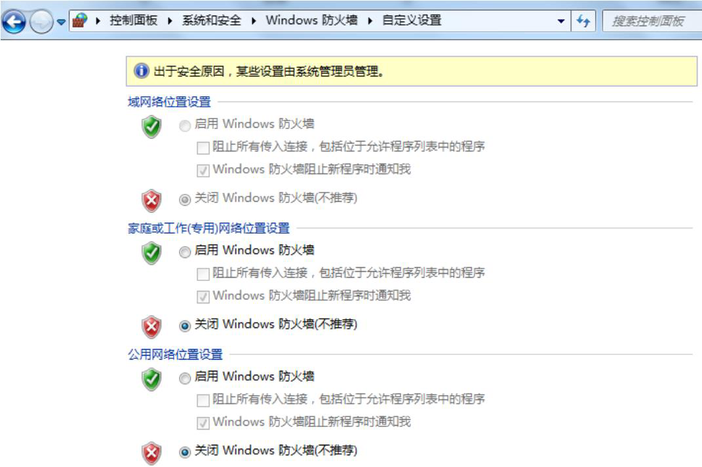
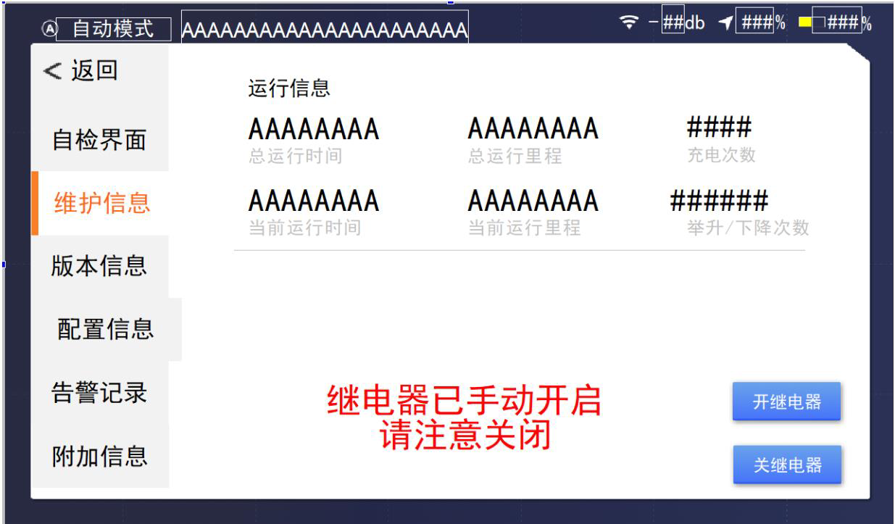
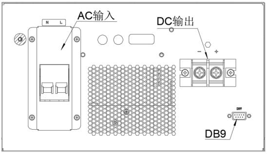
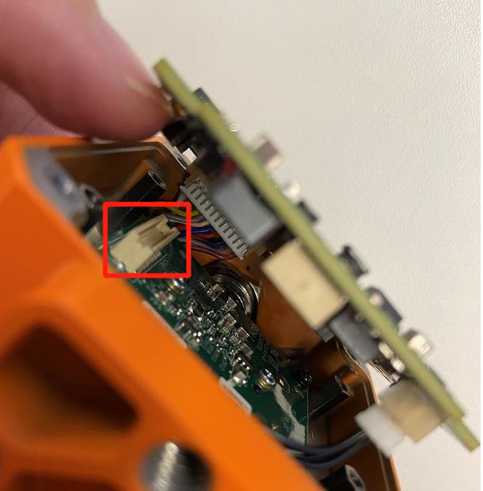

叉车机器人常见告警排查
叉车告警看似千头万绪，先通讯供电、再传感器与执行机构、最后才换件，往往比凭经验猜快得多。八类告警逐条给出成因与恢复动作，并补上失联六步、无法开机的电压分档判断和电池过放的补电红线。
排障方法目录
面向叉车类机器人现场运维人员，排查口径来自内部故障排查手册；同型号不同批次硬件存在差异，涉及电压、电流阈值时以实测数据判断。
排查总原则与证据留存
同一条告警往往有多种成因，按固定顺序排查比凭经验猜要快：
- 先通讯与供电，再传感器与执行机构，最后才考虑换件。网络或电压不正常时，任何上层告警都不可信。
- 每次只改一个变量，改完立即复测并记录，避免多改叠加后无法判断哪一步生效。
- 换件先断电，拆下的故障件保留，便于后续分析。
- 恢复后连续跑几轮任务确认不复现再交付。
车端日志、调度端（RCD）日志、告警发生的时间点。只描述现象很难定位，日志＋时间戳能直接缩到分钟级。
个别 AGV 失联：六步定位
原因：该车到平台的网络链路异常或配置错误。按下面六步逐项排除，多数现场在前三步就能定位：
- 核对无线配置：用小车显示屏或配置工具查平台（RCS）IP、端口号、无线名、无线密码，是否与当前地图匹配；不符则用配置工具改回。
- 查是否分配到无线 IP：终端连接小车执行
ifconfig，看无线网卡（WLAN）有无地址。没有则按现场 IP 制度处理——需 IT 按 MAC 分配的，把小车 MAC 报给 IT；自由获取的，手动配一个不重复的地址。 - 测到平台的连通性：在小车上
ping 平台IP，必要时ping -t持续观察；不通先确认平台服务在线。 - 测无线信号强度：执行
wpa_cli scan多次后wpa_cli scan_r查看各 AP 强度。约 -68 dBm 及以上较稳定；比同场地其他车明显偏弱，检查天线接口是否松动并紧固。 - 查工作模式：确认工作模式处于正常（工作）模式，不是测试/手动模式。
- 查是否识别地码：识别不到地码，车就不知道自己在哪，也不会向平台注册，把车推到地码上即可。
补充：镜头板车型若镜头标定文件丢失，同样表现为失联，需要补回标定文件。
全部 AGV 失联：先看平台侧
个别失联查车，全场失联先查平台：
- 防火墙：检查服务器防火墙是否开启，开启则关闭后复测。
- 注册端口：确认设备注册端口（默认
8988）未被占用，端口值在 rcs-web 服务配置里核对。 - 服务与进程：用
netstat -ano | findstr 端口号与tasklist | findstr 进程名确认服务在监听、进程在运行。 - 网段规划：AGV 的有线与无线不得在同一网段，同一网段会导致注册与路由异常。
- 双向 ping：服务器 ping 小车、小车 ping 服务器，任一方向不通找网络/IT 处理。
- 配置一致性：用配置工具核对车端平台 IP 与端口是否与 rcs-web 一致。

现场关闭防火墙应作为排查手段并记录，长期方案是按端口（注册端口、业务端口）做放通策略，避免一次系统更新后策略被重置。
地图切换、旋转申请与平台指令异常
| 告警 / 现象 | 原因 | 验证与恢复 |
|---|---|---|
| 切图后小车在线但不运行 | 车端地图参数与所在地图不一致 | 用配置工具把车端地图配置改成当前地图 |
| 手动切图后不接任务 | 调度端关联地图未同步 | 释放该车 → 空闲时停止所有关联地图车辆 → 关闭监控客户端 → 在 WEB 端对该服务条目做「远程配置」→ 打开监控客户端、恢复车辆 → 再次释放该车 |
| 旋转申请失败 | 周边被其他车堵住；或距点误差超限；或该点不可旋转 | 先疏通周边车辆；再核对点位误差；最后打开该点的旋转属性 |
| 旋转申请失败（带货架） | 任务要求货架角度应按点配置，实际用了线配置且线默认水平 | 改为点配置并逐点设置货架方向 |
| 平台指令出错（任务下发） | 下发任务与车当前状态冲突 | 拍急停 → 推到其他地码恢复 → 删除任务后按需重发 |
| 地图配置错误 | 线属性货架方向未配置（默认水平），而前一点货架不可旋转，卡在进下一点 | 改为点配置并配置货架方向 |
| IP 冲突 | 手动分配重复，或 IT 按 MAC 绑定的地址与其他设备撞车 | 核对同网段设备地址；由 IT 侧调整绑定 |
「远程配置」这一步会短暂中断调度，务必在空闲时段执行，并提前通知现场。
无法开机：按电压分级判断
按电源开关后用万用表量电池正负极直流电压，用电压值直接分档：
| 实测电压 | 判断 | 下一步 |
|---|---|---|
| 48~55 V | 电池输出正常 | 继续查电源板进线与输出 |
| 0 V | 电池到开关的线束断开或开关故障 | 检查开关至电池线束，调换验证 |
| 40~46 V | 电池过放 | 按电池过放流程补电（见本篇手动充电章节） |
继续往下：量电源板进线是否有电压（无则查电池到电源板线束）→ 量电源板输出是否正常（不正常则换电源板验证）→ 用串口线连主控并重启，查看主控启动打印：无打印说明主控供电或启动异常（查主控供电或换主控），有打印但整机起不来则转技术支持分析。
能源告警：充不进电与电量异常
可手动充、不能自动充（车与桩通讯异常）：
- 所有车在该桩都不行：查桩是否开机、是否上线（与调度通讯是否正常、IP 是否被占用），并用其他充电机替换验证，能充则是充电机故障。
- 只有个别车不行：对比能正常充电车辆的主控版本，版本不一致则升级对齐。
手动、自动都充不进：先判断是「该桩对所有车失效」还是「单台车问题」。单台车把车推进桩内、桩切自动充电、微调车体，观察桩屏幕是否有电压显示——有电压通常即可充电；无电压查充电口到电池的接口与线束。再手动触发继电器闭合，听是否有吸合声，无声查继电器及接线。
电量跳变：连配置工具看各电芯压差，压差过大联系售后换电池；电芯正常则取电池固件版本、用终端下载电池告警信息，交技术支持判断是否需升级固件。
无电量显示：其他信息正常说明屏与主控通讯正常，查电池到主控的通讯线束与接口；整屏都无显示则查主控到显示屏的线束与接口。
举升告警：未到位、货物检测、货叉卡住
- 上举 / 下放未到位，或报外力上举 / 外力下放：查拉线传感器是否正常工作、拉线有无异常；查举升机构有无异物卡涩；电动举升机型查举升电机与减速器组件、减速机与电机轴是否锁紧；液压举升机型查油缸油量是否过少、有无漏油。
- 货物检测传感器异常（检测状态与叉车运行状态不符）：先看检测机构是否卡住并复位 → 检查传感器接线是否松脱、重新插拔 → 用万用表量零位传感器到 IO 板 / 主板之间的线芯通断，不通则调换线束测试。
- 货叉卡住（定义：货叉动作后一定时间内拉线编码器数值无变化）：先排除货叉被障碍物卡住；再手动拉动线束观察举升高度是否有变化，无变化即更换拉线传感器。
拉线传感器和拉线编码器是同一套反馈链路，处理时不要只换传感器而漏查拉线本体是否被压、被磨。
导感与导航库告警
驱动器异常 / 电机异常（驱动组件卡滞、撞到障碍物）：
- 排查货架是否过重、有无障碍物阻挡。
- 检查驱动轮、脚轮有无卡涩。
- 不拍急停时看电机能否锁死，不能锁死可能是电机内部故障，用正常电机交叉验证。
- 检查故障驱动器对应的驱动部件（电机、减速器）是否卡滞。
- 检查电流异常电机驱动板接线有无烧黄、烧焦、松动，重新插拔对应接线。
- 仍不恢复则下载车端与调度端日志交技术支持。
读码组件外参未标（主控内缺少读码头外参标定参数）：
- 终端连接主控，依次执行
castor_cli -R 67、cd /mnt、ls。 - 确认
m_camera_ext_calib_X.txt（X 为外参标号）是否齐全、完整。 - 缺失时：从有外参的主控用同样命令导出参数文件 → 在
/mnt下执行rz上传全部文件 → 执行castor_cli -R 257写入主控 flash。 - 重复第 1 步验证文件已存在。
陀螺仪数据异常：配置工具登录车辆 → 功能标定 → 选陀螺仪标定 → 开始标定 → 等结果；仍异常则调换陀螺仪或线束，判断是否硬件故障。
安全告警：CAN 线、速度跟随与激光
电机 CAN 线不通：
- 单电机：检查该驱动板 CAN 线（绿白线）两头是否松动、脱线；出现扩孔、退针必须更换线束；换线无效则更换驱动板。
- 多电机串联同时报错：优先查主控侧总 COM 线是否松动、脱线，紧固或重新插拔；无效换主控验证；换主控仍无效则判定总 COM 线故障并更换。
电机速度跟随异常（指令速度与实际差得大）：举升电机查是否背负过重、举升机构卡滞；旋转电机查托盘是否被阻挡、旋转机构卡滞；左右电机查有无异物阻碍、减速器与电机卡滞。无外部阻碍时，紧固减速器抱轴螺丝。
前方遇障（激光误检测）：
- 推到空旷路段观察是否仍报障。
- 用干净无尘布擦拭激光表面（无尘布可用时用干净纸巾替代），直至无明显灰尘、污渍。
- 看激光表面有无明显划伤、碰撞痕迹，有则更换。
- 检查前壳是否变形导致误检测。
- 有调试工具时把车推到空旷处，用笔记本连激光查看扫描图，确认是否误检。
- 空旷处正常、运行时复现：不拍急停，连车查看当前激光方案，确认是否方案调用错误；错了重新烧录正常方案。
激光传感器异常：用激光软件或表面数码管读取告警与固件版本（固件未升级是常见原因），交技术支持分析；再查线束、重新插拔或换线；最后调换激光板验证。
声光硬件异常
- 灯条不亮或颜色异常：查接线是否松动、脱线、变形 → 查接口是否脱焊（破损则换灯条）→ 肉眼查不出就用正常灯条交叉替换，区分灯条本体与线束问题。
- 小车无声音：查扬声器两端接线 → 开机状态用万用表直流档量扬声器供电端子，应约 12 V DC，异常则查喇叭到主控线束 → 用 Micro-USB 把扬声器当 U 盘连电脑，确认语音文件是否存在 → 把音量旋钮顺时针调到最大，并确认系统音量未被设得过小 → 换扬声器验证。
- 显示屏显示异常：先排除外力损坏 → 无图像且触摸无反应时查显示屏到主控两端接线 → 换屏验证 → 新屏显示非常规界面说明程序不对，需重新下载显示屏程序。
声光件都是可交叉替换的部件，判断成本低：先换件再拆线，能快速区分是本体故障还是线路故障。
电池过放：手动补电（有电可开机）
前提：机器人还有电、能开机，才能借助充电桩手动补电。分 24 V 与 48 V 两种桩，流程不同：
通用第一步：让机器人充电板与充电桩伸缩充电头接触到位。
开启充电继电器（两种桩相同）：
- 机器人液晶屏点「开继电器」；若无此按钮跳过。
- 终端执行
castor_cli -R "202"，成功后用万用表量机器人刷板电压，应在 30~60 V；失败进入下一步。 - 执行
castor_cli -R "202 继电器占空比"，成功后同样量刷板电压；仍失败联系技术支持。不同机型占空比不同，按机型参数取。

24 V 桩：桩液晶屏进「出厂设置」输入维护密码 → 「调试界面」：输入电压 29、输入电流 80、电池电压模拟 24 → 点 BMS 切换为「调试」→ 关机。开机后观察面板输出电压、电流；补电结束点「关机」，电压电流归零后关闭机器人继电器，退出手动界面回首页恢复自动充电。
48 V 桩：先断开充电桩 DB9 通讯接口，再按上面的步骤开继电器；桩屏「用户登录」输入维护密码后才有手动充电权限 → 返回主界面 → 「手动充电」选 20 AH / 30 AH / 60 AH，所选电量必须小于电池容量 × 0.5 → 按需选档位 → 结束时同样先归零、再关继电器、回首页点「自动充电」。

① 电池电压 40~46 V 才算过放，不要对正常电压电池做手动补电；② 48 V 桩不断开 DB9 不许开继电器；③ 补电结束未归零就关继电器，或忘记关继电器，都会留下带电风险。
如果已经无法开机：关机 → 拆叉车侧板 → 断开电池接口 → 用补电工装补电；补电失败联系售后更换电池。
读码头通讯异常：拆检顺序
该处理只针对读码头自身故障。现场多数读码头通讯异常，是运输与运行振动导致内部固定接口接触不良。
- 拧下读码头背部 4 个后盖梅花螺丝（不可用六角），取下后盖。
- 拧下 4 个电路板固定螺丝。
- 从一边缓缓翘起一条缝即可，电路板上有线束连接，不要翘太高。
- 检查两块板之间的 1 个固定接口是否完整、无损坏，再确认 2 个线束接口是否紧固。
- 复原时固定接口务必插紧，装回后盖、装车测试；仍异常则更换读码头。

拆检前先断电，操作时避免金属工具刮碰板面；插回线束后轻拉确认不脱，再合盖。
上线前核对
- 失联排查按「无线配置 → 无线 IP → ping 平台 → 信号强度（约 -68 dBm 及以上）→ 工作模式 → 是否识别地码」六步逐项完成，天线接口无松动
- 全场失联先确认服务器防火墙已关闭/端口已放通，注册端口（默认 8988）未被占用
- 已用 netstat / tasklist 确认服务在监听、进程在运行，且 AGV 有线与无线不在同一网段
- 车端平台 IP 与端口与 rcs-web 配置一致，双向 ping 均可达
- 无法开机时已量电池电压并按 48~55 V / 0 V / 40~46 V 分档处理，再逐级查电源板与主控打印
- 充电异常已区分「单桩对全部车」与「单台车」，并测试继电器吸合声与桩屏电压显示
- 举升与货叉类告警已查拉线传感器、拉线本体、举升机构卡涩与货物检测接线通断
- 读码外参异常时已确认 m_camera_ext_calib_X.txt 齐全，并按 castor_cli -R 67 / rz / -R 257 导入验证
- CAN 线异常已查绿白线松动、扩孔退针；多电机同时报错优先查主控侧总 COM 线
- 激光误检测已完成清洁、外观检查、前壳检查、扫描图确认与激光方案核对
- 电池过放补电全程符合红线要求：仅对过放电池补电、48 V 桩先断 DB9、结束归零后关继电器
- 读码头拆检按「后盖 4 螺丝 → 电路板 4 螺丝 → 轻撬 → 查固定接口与 2 个线束接口」顺序执行，且已断电